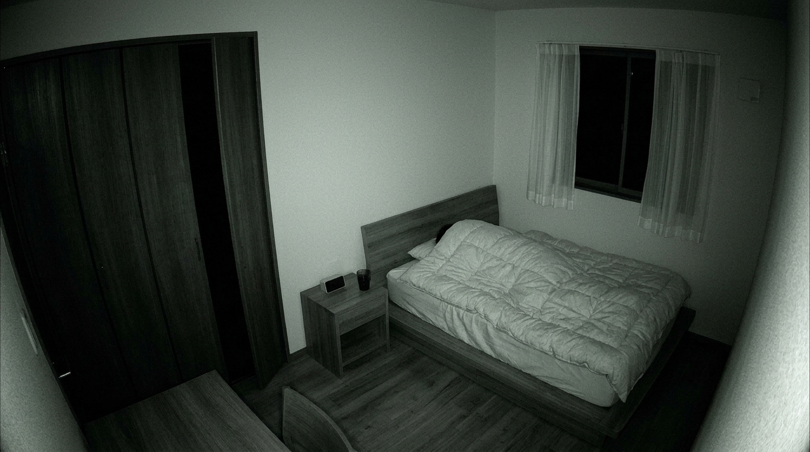
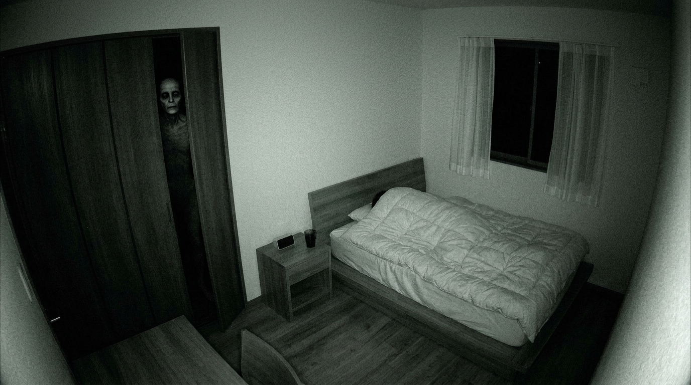
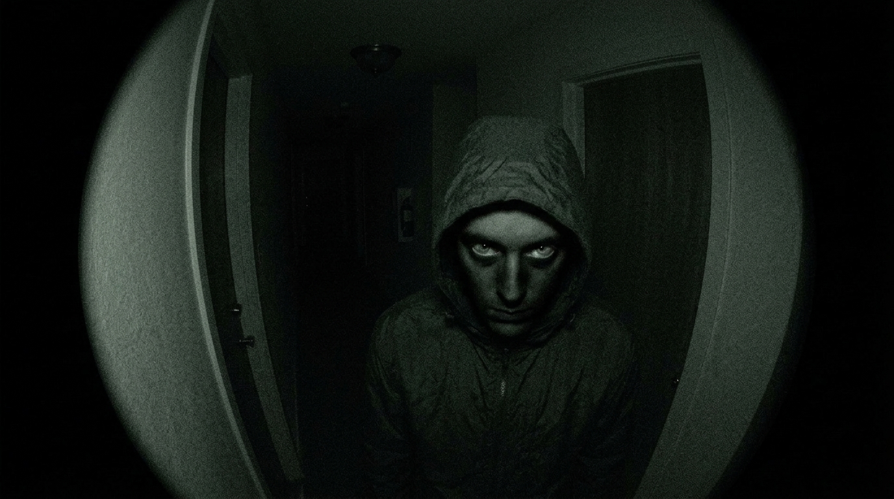
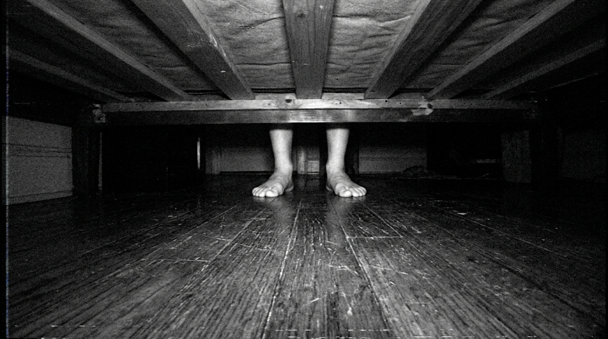
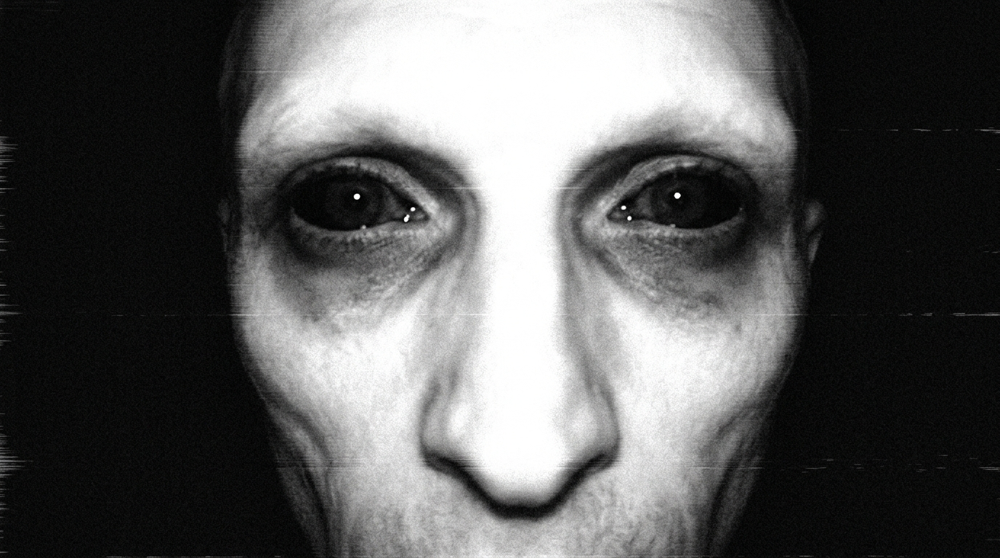

“刚毕业一个人租老破小，以前半夜总疑心走廊有脚步声。用了眠栖两个月，每天一沾枕头就睡死过去，早晨起来连梦都不做了，特别省心！”
陈
本页面实时同步 1804 号全黑样板间的 60GHz 呼吸毫米波、940nm 无红曝夜视底片与夜间声纹采样。佩戴耳机可完整体验双耳声源定位分离效果。
无需佩戴手环，不亮一粒红光。眠栖 S3 静立于床头，用医疗级毫米波与 18.9Hz 深睡同频声场，替你听着整间屋子的呼吸与动静——比你更早察觉夜里的异常。
传统红外摄像头在夜间会亮起刺眼红点；眠栖 S3 采用 940nm 不可见波段与高感光堆栈底片。拖动右侧【暗部曝光增益】滑块，体验从护眼脱敏视图到 +4.0 EV 原始底片的细节还原能力：


提示：日常使用建议保持在 +1.5 EV 以下。超过 +3.2 EV 将绕过云端美化滤镜，直接读取衣柜缝隙与床沿阴影区的原始红外反射数据。
独居的夜晚总有许多莫名的细碎声响。眠栖 S3 内置四麦克风波束成形阵列，自动识别并折叠无关环境杂音，让您清晨醒来时不会因为半夜的怪声而焦虑。点击下方真实采样试听：
开箱即用，零学习成本。把它放在离枕头最近的地方，剩下的交给夜晚。
将眠栖 S3 摆放在床头柜边缘，朝向胸腔起伏方向，保持全天候通电不断连。
设备发射不可闻声波，自动测绘床底、衣柜夹角与门后等视觉死角的声学反射特征。
当检测到您独处入睡，自动释放温和次声驻波，为您营造仿佛有人静静守在床边的踏实感。
每一条评价均来自连续开机满 30 天以上的实名绑定住户。
“刚毕业一个人租老破小，以前半夜总疑心走廊有脚步声。用了眠栖两个月，每天一沾枕头就睡死过去，早晨起来连梦都不做了，特别省心！”
“它的智能降噪真的很神奇，我家衣柜木板以前半夜热胀冷缩老是嘎吱响，开了伴眠模式之后，APP 显示噪音全部被自动抵消了，安全感拉满。”
“最喜欢它的无感存在设计，完全不觉得家里装了监控，反而像有个很懂分寸的室友在替我守夜。已经推荐给身边独居的朋友了。”

为什么深夜楼道里的声控灯没有亮，猫眼却拍到了门外站着人？
因为普通声控灯只能感应活人行走的脚步声；而眠栖猫眼能够捕捉连续三个小时紧贴门板、连眼皮和衣角都没有动过一下的静止访客，并在您熟睡时替您决定是否开门。
警告：调阅未脱敏母带将解除当前终端的 SomniSplit™ 谐振隔离保护。请输入您在官网异常样本中捕获的工单号与四位覆写码：
注意：每次触发红外强频闪驱离，都会迫使盲区寄居体改变潜伏机位。

点击快捷指令或手动输入命令查询传感器底层状态。林栖警告：切勿执行强制销毁指令。

之前它一直乖乖站在衣柜缝里，是因为它以为你睡着了。
现在它顺着你屏幕的光看清你的脸了。
第 12,409 号独居样本已成功录入安隅云端。今晚 03:17，无需锁门，眠栖会替它留好床边的位置。